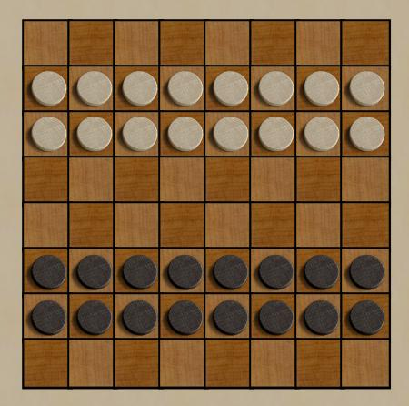
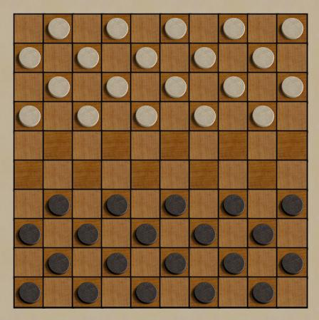

Checkers
(and checkers
variants)
Checkers was one of the very first games to be implemented on
computers, and one of the first to have a successful playing
program. Papers about checkers by Samuel were
probably cited more than any other in the history of game playing
programs. For years, a very successful program,
Chinook, defeated all challengers, except one lone human expert, Marion
Tinsley. Chinook finally became the undisputed
champion in 1995, when Mr. Tinsley died. Subsequently,
Checkers was solved
in the strictest sense, by generating a complete game
tree, in 2007.
All this applies to the traditional "American Standard" checkers, which
is close to the game you probably played as a kid, except "jumping own
men" is not allowed. There are hundreds of variants, some
regional, some modern. Boardspace has two interesting
variants; Turkish Checkers and International
Checkers.
Robots:
Beats me (take that literally) but I've never claimed to be a checker
players.
|

|